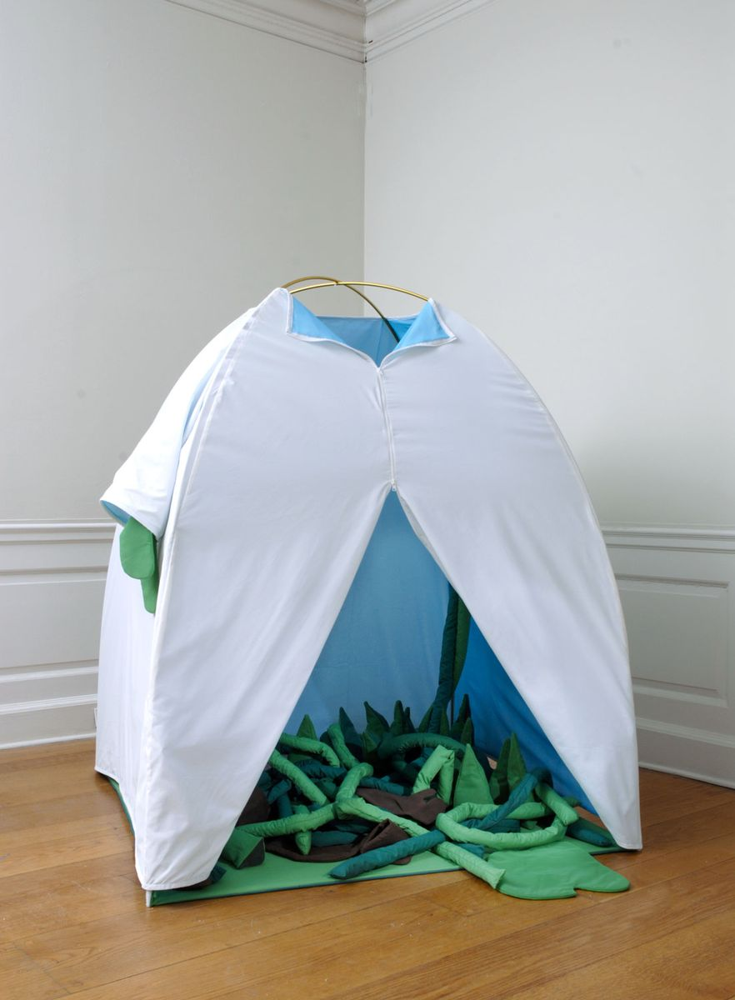
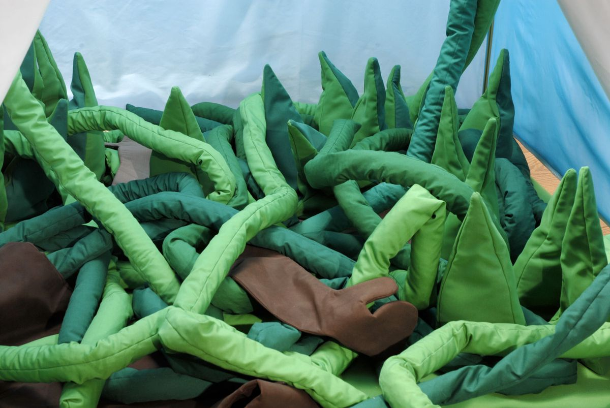
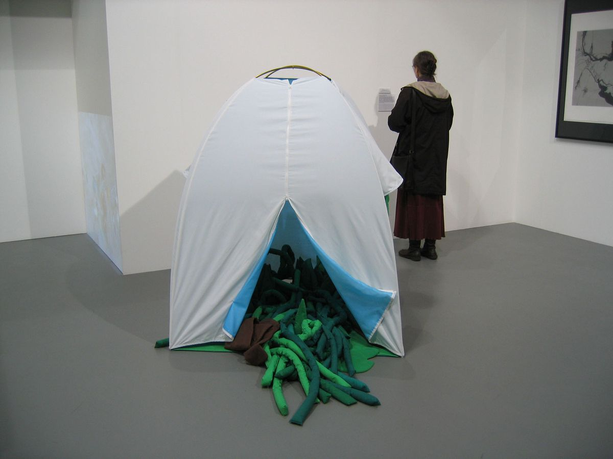
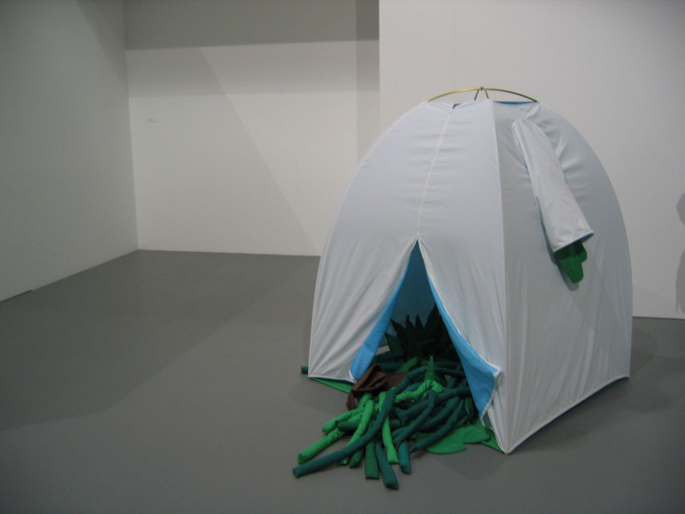
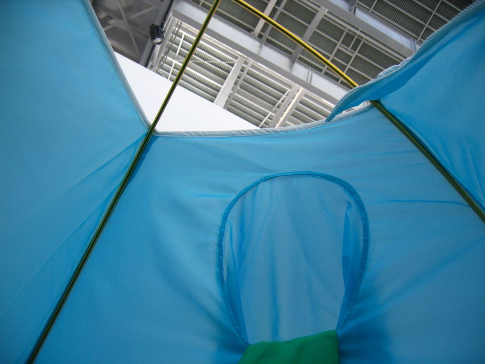

Portable Private Garden
Wave Hill, Glyndor Gallery and Grounds, Nova Iorque, 2006 · Lower Manhattan Cultural Council, Nova Iorque, 2008 · Museu da Electricidade, Lisboa, 2009
Uma tenda branca, de interior azul, da qual transborda um jardim de formas vegetais em tecido. Mostrada em Garden Improvement, com curadoria de Jennifer McGregor, em Wave Hill (2006), em Human Resources, com curadoria de Sara Reisman, no Lower Manhattan Cultural Council (2008), e em Lá Fora, com curadoria de João Pinharanda, no Museu da Electricidade (2009).





Imprensa
- Portugueses em Nova Iorque (PDF)Pedro Reis · alexandrepomar.typepad.com · 02.2008 · PT
- Odes to Nature, Grand and Demure, at Two Bronx Gardens (PDF)Ken Johnson · The New York Times · 14.07.2006 · EN
Publicações
- Lá Foracatálogo, texto de João Pinharanda, Museu da Presidência da República e Museu da Electricidade, Lisboa, 2009
- Garden Improvementcatálogo, texto de Jennifer McGregor, Wavehill, Glyndor Gallery and Grounds, Nova Iorque, 2006